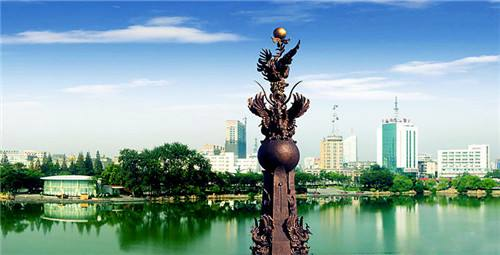
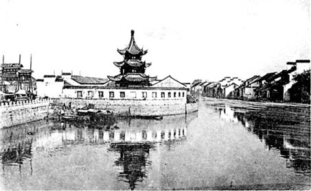
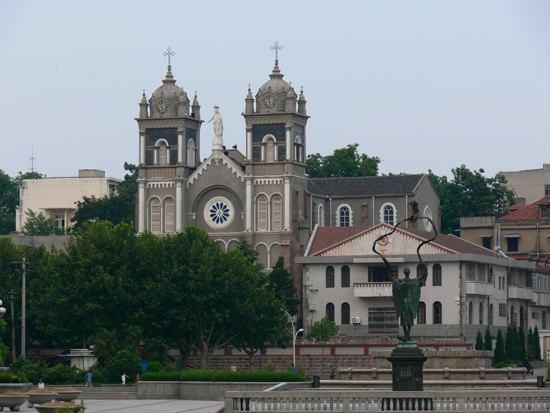
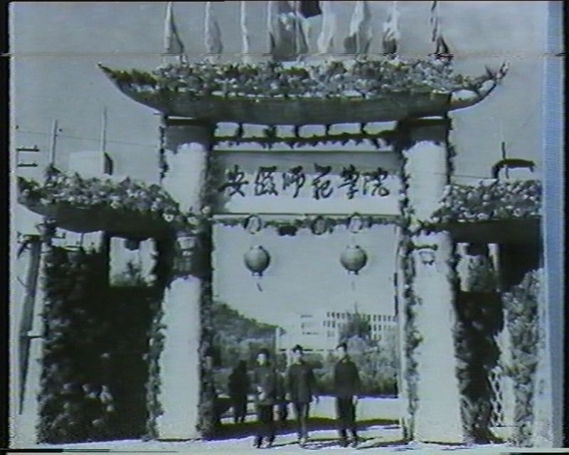
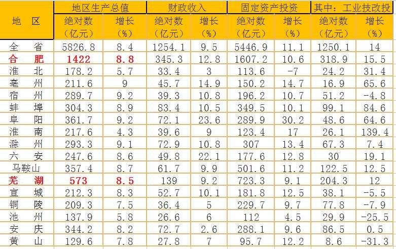

春秋战国时期，因为芜湖附近一带的湖泊草丛中鸠鸟众多，被吴国命名为鸠兹邑，流经此地的长江一段由此别名鸠江，故址在今芜湖市东南约四十里的水阳江南岸。此地则有湖泊芜草丛生，得名芜湖，这便是芜湖名字的由来。
右边的这尊雕塑是以芜湖古名“鸠兹”鸟为原型，加以艺术的夸张设计而成。九只姿态各异的鸠兹鸟，一只只都像振翅欲飞。顶端托起一只金球，仿佛是托起芜湖的希望。整个雕塑既庄严肃穆，又给人以艺术的享受。雕塑四周是几十枝喷出的水柱，色如银，形如剑，直冲天空，与青铜雕塑浑然天成为一幅“鸠顶泽瑞”的景观。
图为芜湖鸠兹广场，鸠兹雕塑伫立在镜湖旁

明代，芜湖重筑城垣，1581年（万历九年）建成，其规模甚小，周围739丈，略呈梯形。但是，由于工商业繁盛，街市远远超出城墙范围，沿青弋江两岸向西延伸，直到长江。“自鱼市口至江口宝塔根，号称十里长街”。芜湖“聚舟车之多，货殖之富，衣冠文物之盛，殆与州郡寽，他弗能比也”，芜湖被徽商列为全国16个大城市之一。
图为明代的芜湖水路

图为明代芜湖路街人头攒动，商贾繁忙

图为当时从长江边看芜湖

图为芜湖天主教堂，建成于1895年

图为旧时的安徽师范大学

历史上，芜湖在很长时间内均为长江沿岸重要河港，曾是徽商对外贸易的重要中转基地。1876年开埠以后，沿江地区英国、日本均设有半租界性质的居留地,如英国建有太古码头。
现时芜湖为长江溯江而上的最后一个深水良港，并且是长江沿岸的第四大港口。长江北(西)岸的裕溪口港为中国国内最大的内河煤港，是安徽两淮和晋、豫、鲁诸省煤炭转运的集散站，长江南(东)岸的朱家桥码头，可停靠万吨远洋货轮。 据2016年统计，芜湖GDP总量居安徽省第二位，GDP增速在安徽省所有城市中排名第一位，人均GDP居安徽省第二位。
图为芜湖港

芜湖2016年GDP仅次于省会合肥

经过千年之后，今天的芜湖在经济和人文上不断焕发着新的生机，未来的发展之路，芜湖必将越走越宽。
只要有创新精神作为核心驱动力，发展就不会停滞。皖江明珠，创新之城，这就是我的家乡——芜湖。